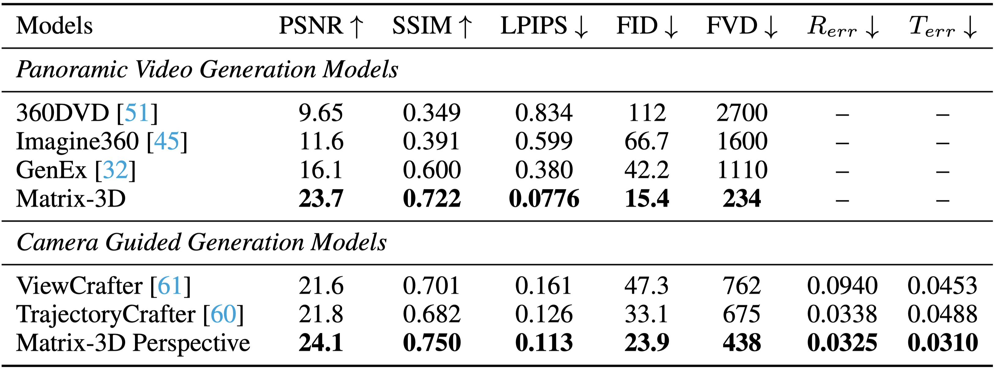

Matrix-Pano Dataset: Scalable Synthetic Panoramic Videos
Data Samples

Automated Trajectory Generation & Capture
Scale & Open Source Plan
Geometric & Textural Consistency
Fine-Grained Trajectory Control
Generate different 3D scenes based on different user-specified camera trajectories. Each row shows an input panorama (top) and the rendered 3D scene video (bottom), corresponding to different camera paths.
| Input Image | S-curve Trajectory | Straight Trajectory | Diagonal Right-Front |
|---|---|---|---|
Large-Scale Movement
Matrix-3D can generate 3D scenes with greater range than WorldLabs.
| Input Image | WorldLabs Result | Matrix-3D Result |
|---|---|---|
Endless Exploration
3D worlds generated by Matrix-3D allow exploration in any direction, facilitating the development of an endless exploration strategy. Given an input image and an initial trajectory path, users can generate the first segment of the 3D scene. Subsequently, users can look around, change direction, and continue exploration along a second trajectory. This approach enables endless exploration, allowing users to freely navigate the 3D scene in any direction.
| Input Image | First Exploration | Second Exploration | Combined Video |
|---|---|---|---|
|
|
|
||
|
|
|
||
|
|
|
Comparison
Comparison of Panoramic Video Generation and Camera Guided Generation Models

-Compared with SOTA 360-video generation methods, Matrix-3D
delivers superior visual quality and plausible geometric structure in the generated panorama videos.
- Our method also outperforms previous camera-controlled video generation approaches regarding visual quality and camera controllability.

Comparison with 3D World Reconstruction
We compare our method against ODGS, a state-of-the-art optimization-based 3DGS approach tailored for panoramic inputs. Our proposed optimization-based pipeline substantially outperforms ODGS in reconstruction quality, while our feed-forward variant enables fast and efficient reconstruction. Slight color inconsistencies in the optimization-based results stem from a super-resolution pre-processing step.